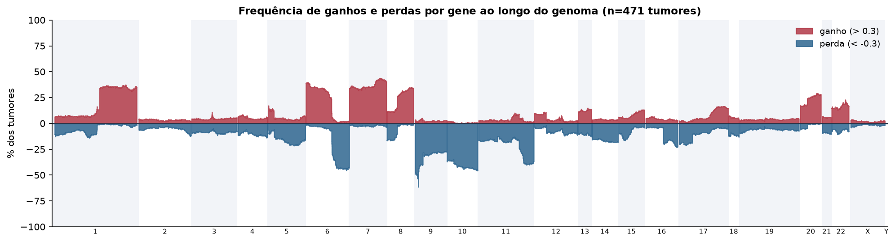
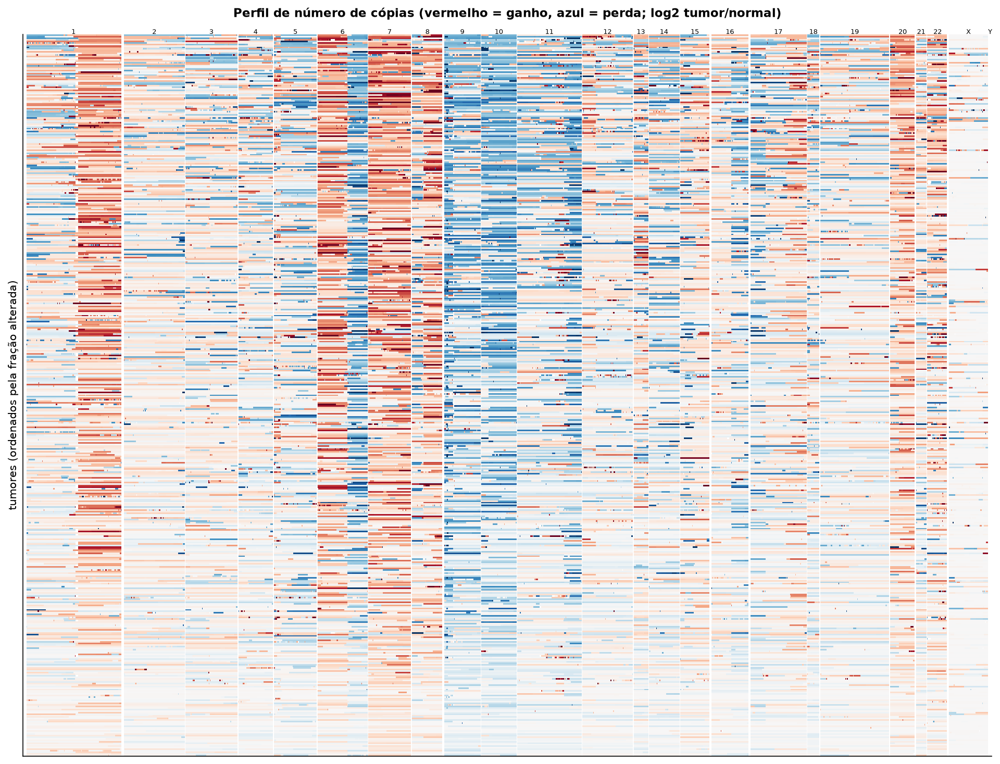
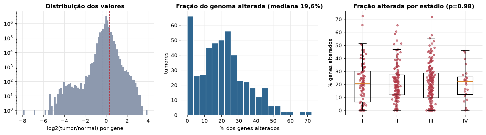
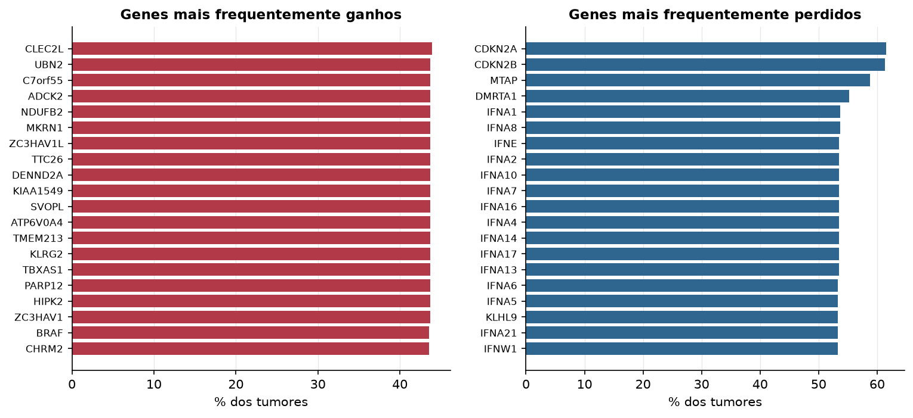

SKCM · Número de cópias (CNV)
Affymetrix SNP6, segmentos whitelisted do PanCanAtlas · gerado em 22/10/2026 04:12
471tumores
17.738genes
19,6%fração alterada mediana
130segmentos/tumor (mediana)
Fonte: SNP6 whitelisted (PanCanAtlas); nível de gene calculado dos segmentos (hg19)
O valor por gene é o do segmento que cobre o meio do gene (log2 tumor/normal, hg19). Sem correção de pureza e ploidia: tumores com pouca célula tumoral têm valores atenuados. Para chamadas discretas (−2 a 2), use o GISTIC2 do PanCanAtlas ou o ABSOLUTE.
Principais resultados
- Mediana de 19,6% dos genes com ganho ou perda por tumor (limiares log2 de 0.3 e -0.3).
- O cromossomo com mais ganhos em média é o 7 (36,7% dos tumores por gene) e o com mais perdas é o 10 (40,7%).
- Genes mais ganhos: CLEC2L (44%), UBN2 (44%), C7orf55 (44%), ADCK2 (44%), NDUFB2 (44%), MKRN1 (44%). Genes mais perdidos: CDKN2A (62%), CDKN2B (61%), MTAP (59%), DMRTA1 (55%), IFNA1 (54%), IFNA8 (54%).
- Fração alterada por estádio: Kruskal-Wallis p=0.98.
Paisagem ao longo do genoma


Carga de alterações

Genes recorrentes

Top 25 genes por frequência de ganho
| gene | chrom | % ganho | % perda | média log2 |
|---|---|---|---|---|
| CLEC2L | 7 | 43.9 | 1.3 | 0.288 |
| UBN2 | 7 | 43.7 | 1.3 | 0.286 |
| C7orf55 | 7 | 43.7 | 1.3 | 0.286 |
| ADCK2 | 7 | 43.7 | 1.5 | 0.288 |
| NDUFB2 | 7 | 43.7 | 1.5 | 0.288 |
| MKRN1 | 7 | 43.7 | 1.5 | 0.286 |
| ZC3HAV1L | 7 | 43.7 | 1.3 | 0.285 |
| TTC26 | 7 | 43.7 | 1.3 | 0.286 |
| DENND2A | 7 | 43.7 | 1.5 | 0.287 |
| KIAA1549 | 7 | 43.7 | 1.3 | 0.285 |
| SVOPL | 7 | 43.7 | 1.3 | 0.284 |
| ATP6V0A4 | 7 | 43.7 | 1.3 | 0.284 |
| TMEM213 | 7 | 43.7 | 1.3 | 0.285 |
| KLRG2 | 7 | 43.7 | 1.3 | 0.287 |
| TBXAS1 | 7 | 43.7 | 1.5 | 0.288 |
| PARP12 | 7 | 43.7 | 1.5 | 0.287 |
| HIPK2 | 7 | 43.7 | 1.3 | 0.287 |
| ZC3HAV1 | 7 | 43.7 | 1.3 | 0.285 |
| BRAF | 7 | 43.5 | 1.9 | 0.284 |
| CHRM2 | 7 | 43.5 | 1.5 | 0.284 |
| DGKI | 7 | 43.5 | 1.5 | 0.285 |
| LUC7L2 | 7 | 43.5 | 1.3 | 0.286 |
| SLC37A3 | 7 | 43.5 | 1.5 | 0.286 |
| RAB19 | 7 | 43.5 | 1.5 | 0.286 |
| OR9A4 | 7 | 43.3 | 1.7 | 0.282 |
Top 25 genes por frequência de perda
| gene | chrom | % ganho | % perda | média log2 |
|---|---|---|---|---|
| CDKN2A | 9 | 0.6 | 61.6 | -0.83 |
| CDKN2B | 9 | 0.8 | 61.4 | -0.837 |
| MTAP | 9 | 0.6 | 58.8 | -0.65 |
| DMRTA1 | 9 | 1.3 | 55.2 | -0.522 |
| IFNA1 | 9 | 1.1 | 53.7 | -0.448 |
| IFNA8 | 9 | 1.1 | 53.7 | -0.448 |
| IFNE | 9 | 1.1 | 53.5 | -0.46 |
| IFNA2 | 9 | 1.1 | 53.5 | -0.438 |
| IFNA10 | 9 | 1.1 | 53.5 | -0.426 |
| IFNA7 | 9 | 1.1 | 53.5 | -0.426 |
| IFNA16 | 9 | 1.1 | 53.5 | -0.426 |
| IFNA4 | 9 | 1.1 | 53.5 | -0.426 |
| IFNA14 | 9 | 1.1 | 53.5 | -0.43 |
| IFNA17 | 9 | 1.1 | 53.5 | -0.43 |
| IFNA13 | 9 | 1.1 | 53.5 | -0.437 |
| IFNA6 | 9 | 1.1 | 53.3 | -0.436 |
| IFNA5 | 9 | 1.1 | 53.3 | -0.429 |
| KLHL9 | 9 | 1.1 | 53.3 | -0.43 |
| IFNA21 | 9 | 1.1 | 53.3 | -0.416 |
| IFNW1 | 9 | 1.1 | 53.3 | -0.408 |
| IFNB1 | 9 | 1.3 | 52.7 | -0.398 |
| ELAVL2 | 9 | 1.7 | 51.6 | -0.44 |
| MLLT3 | 9 | 1.3 | 51 | -0.359 |
| BNC2 | 9 | 2.1 | 50.3 | -0.344 |
| CNTLN | 9 | 1.7 | 50.1 | -0.315 |